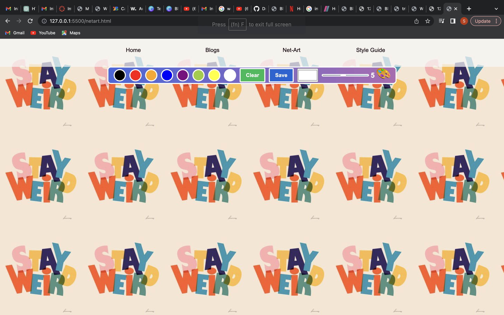

I have sat and thought long and hard about my internet artwork idea after realizing my initial idea still needs a lot of work and I did not have much time to get around doing it. This current artwork is still small scale and there are still developments to be made as I work on the website for the upcoming assignments.
The initial idea was to have my whole website function as internet art on its own. I wanted to create a website coloring book essentially. I wanted to have the user interact with the website and leave traces of color as they go along. There would have been small doodle drawings around the website which could be colored in using a color palate with a color picker. After I realized that I will be needing more time and assistance with this idea I thought I needed to come up with a different idea which still aligns with the whole coloring book idea. I then thought I could have a section dedicated to the user making their own art by drawing and coloring their drawing and saving it as a png file. I created a page with drawing tools and colors which can be saved as picture onto your laptop. This idea is still small scale and is still to be developed.
Most of my research and planning is based around my first idea of making the website my web art so I created a moodboard and concept board that explains the idea I had. I still plan of doing this idea hopefully it can be implemented successfully with react in the coming assignments because I still like that idea very much and I think it could be cool to do. For the small-scale experimental internet artwork that I have currently I initially wanted to have a set drawing in the background of the canvas that the user can color in with the color of their choosing etc.
 Click Moodboard
Click Moodboard
 Click concept board
Click concept board
Here is an example of what the canvas could have looked like with a black and white set image that the user adds color to:
{kind=link}
The artwork page has some glitches that I have not been able to fix at the moment where the mouse does not draw directly where it is pointed, and this affects the drawing process. This section of the website does not have a footer because I wanted to make it look and feel like a plain white canvas like the painting app and having a footer would have been a distraction. Overall I like this idea considering it is still a small scale experimental piece which I can still develop with feedback received it could be a cool idea to fully develop and execute